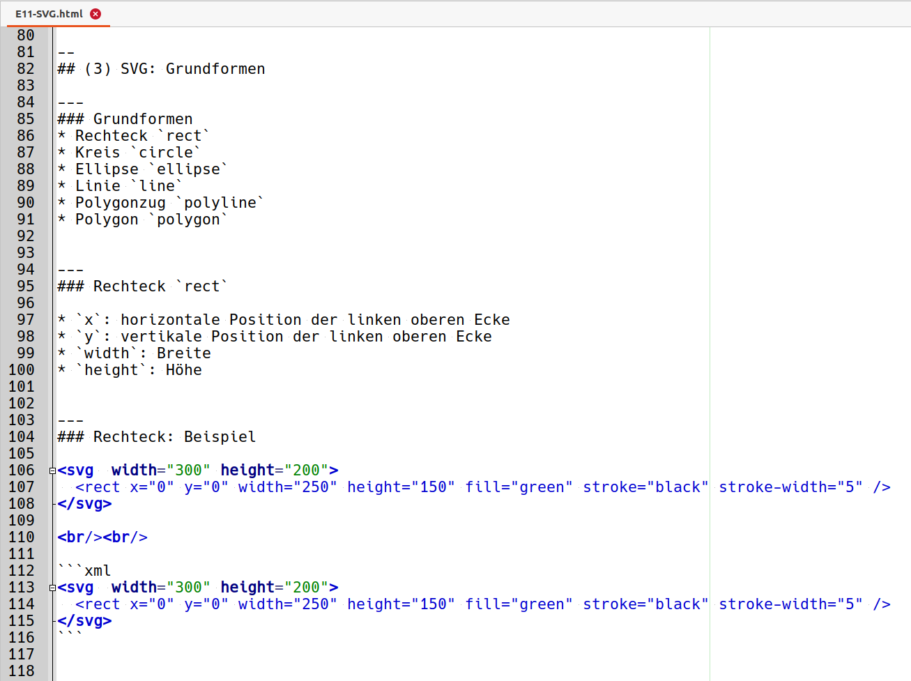
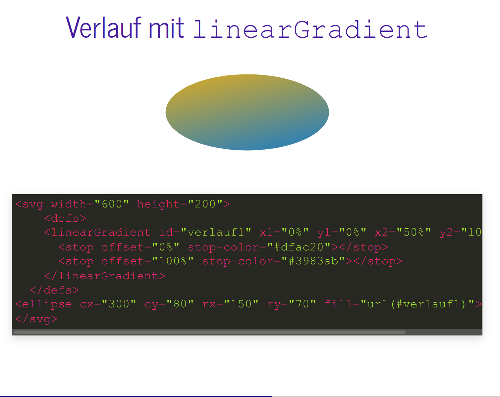
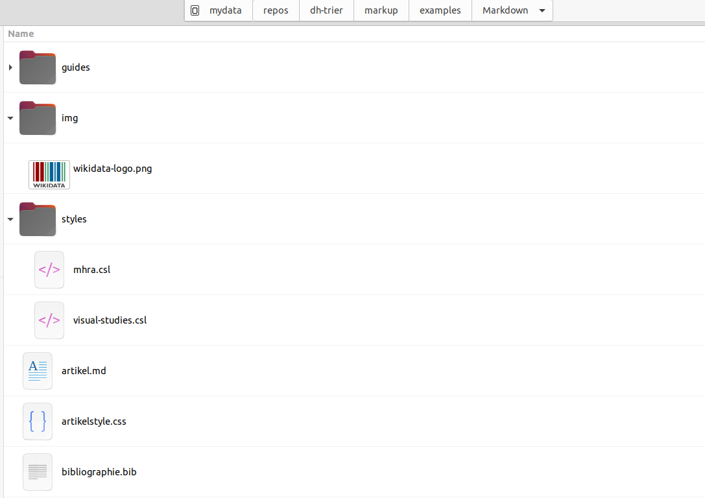
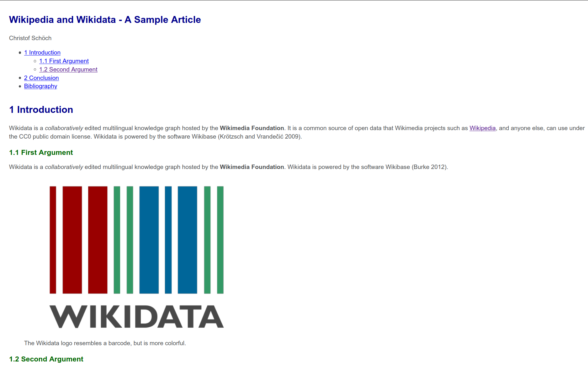
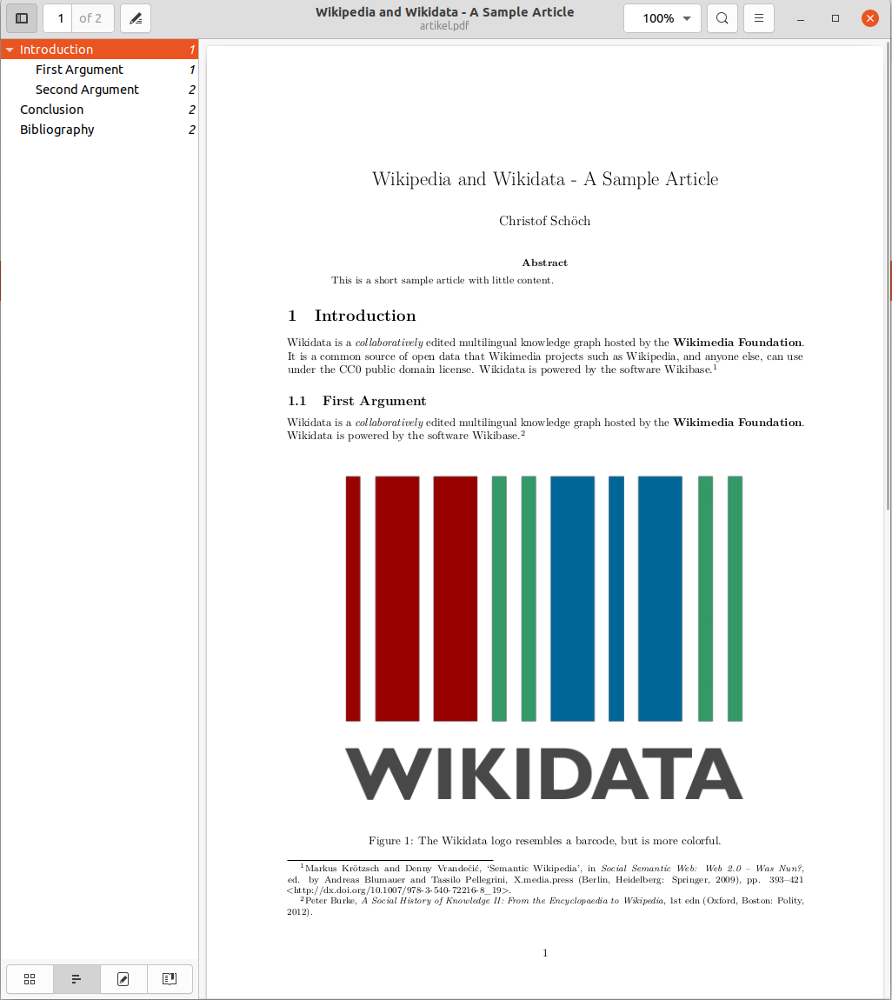

# Markdown statt Markup <br/> <hr/> <br/>Prof. Dr. Christof Schöch <br/> <br/> <hr/> <p><strong>Modul Auszeichnungssprachen<br/>MSc. Digital Humanities, Universität Trier</strong></p> <hr/> <img height="60" data-src="img/basics/uni-trier.png"> -- ## Überblick 1. Was ist Markdown? 1. Markdown-Syntax 1. Markdown zu X: pandoc 1. Praxis-Beispiel: Artikel 1. Abschluss -- ## (1) Was ist Markdown? --- ### XML/HTML oder DOCX zu umständlich? * Es gibt eine Reihe von Alternativen <!-- .element: class="fragment" data-fragment-index="1" --> * MediaWiki Syntax (Wikipedia) * LaTeX (Naturwissenschaften, Linguistik) * und einige mehr! * Und eben: Markdown (inzwischen weit verbreitet) <!-- .element: class="fragment" data-fragment-index="2" --> --- ### Markdown vereinfacht das Schreiben * ...deckt eine Teilmenge von HTML ab <!-- .element: class="fragment" data-fragment-index="1" --> * verzichtet auf die Tags <!-- .element: class="fragment" data-fragment-index="2" --> * verwendet statt dessen wenige, einfache Codes <!-- .element: class="fragment" data-fragment-index="3" --> * kann durch HTML (und SVG) ergänzt werden <!-- .element: class="fragment" data-fragment-index="4" --> * ist auch unmittelbar schon gut lesbar <!-- .element: class="fragment" data-fragment-index="5" --> * kann leicht in HTML transformiert werden <!-- .element: class="fragment" data-fragment-index="6" --> * kann für Artikel, Präsentationen, Bücher etc. verwendet werden <!-- .element: class="fragment" data-fragment-index="7" --> --- ### Beispiel: MD und SVG für Slides   -- ## (2) Markdown-Syntax --- ### Wir wechseln in Atom * Atom mit 'Markdown Preview'-Plugin * Ordner: https://github.com/dh-trier/markup/tree/main/examples/Markdown * Datei: markdown-syntax.md * Herunterladen und mit Atom öffnen * Strg+Shift+M: aktiviert Markdown-Preview --- ### Kompakt zum Nachschauen * Basic Syntax: https://www.markdownguide.org/basic-syntax/ * Extended Syntax: https://www.markdownguide.org/extended-syntax/ -- ## (3) Markdown zu X: pandoc --- ### Was ist pandoc? * Ein Kommandozeilen-Tool für die Transformation von Dokumenten * Rund 50 verschiedene Textformate können ineinander transformiert werden * Nutzt auch Layout-Templates, Bibliographien, Zitierstile * Siehe: https://pandoc.org/ --- ### Minimales pandoc-Beispiel ``` pandoc textdatei.md -o ergebnis.html ``` --- ### Angabe von Optionen * Syntax: `pandoc [Optionen] input.md -o output.html` --- ### Befehle für Input und Output-Format * Format für Input und Output werden an der Endung erkannt * Einige Formate: docx, odt, epub2, epub3, gfm, html, mediawiki, (pdf) * Wenn die Erkennung nicht klappt: * `--from`: aus welchem Format wird konvertiert? * `--to`: in welches Format wird konvertiert? --- ### Einige weitere Optionen * `--number-sections`: durchnummerierte Überschriften * `--standalone`: bei HTML: vollständige Datei mit Header * `--toc`: erzeugt ein Inhaltsverzeichnis * `--css datei.css` oder kurz: `-c datei.css` <br/>(erfordert eine CSS-Datei) -- ## (4) Einbinden von Referenzen --- ### Beispiel: benötigte Dateien * Kurzer Beispieltext in Markdown: `artikel.md` * Bibliographie in BibTex: `bibliographie.bib` * Zitierstil in CSL: `styles/mhra.csl` * Bilddatei: `img/wikidata-logo.png` * Außerdem eine CSS-Datei: `artikelstyle.css` --- ### Beispiel: Ordneransicht  --- ### Eine BibTex-Referenz ``` @book{burke_social_2012, edition = {1}, title = {A {Social} {History} of {Knowledge} {II}: {From} the {Encyclopaedia} to {Wikipedia}}, isbn = {0-7456-5042-2}, shorttitle = {A {Social} {History} of {Knowledge} {II}}, language = {en}, address = {Oxford, Boston}, publisher = {Polity}, author = {Burke, Peter}, year = {2012} } ``` --- ### Ein CSS-Snippet ``` h1 { color: darkblue ; font-size: 160%; margin: 3ex 0 2ex 0; } h2 { color: darkgreen ; font-size: 120%; margin: 2ex 0 1ex 0; } ``` --- ### Transformation zu HTML ``` pandoc --filter pandoc-citeproc --csl styles/visual-studies.csl --bibliography bibliographie.bib --css artikelstyle.css --toc --self-contained --number-sections --to html5 -i artikel.md -o artikel.html ``` (Alles auf einer Zeile) --- #### Ergebnis  https://raw.githubusercontent.com/dh-trier/markup/main/examples/Markdown/artikel.html --- ### Transformation zu PDF ``` pandoc --metadata pagetitle="Wikipedia and Wikidata" --filter pandoc-citeproc --csl styles/mhra.csl --bibliography bibliographie.bib --number-sections -V geometry:margin=2.5cm --variable=geometry:a4paper -i artikel.md -o artikel.pdf ``` (Alles auf einer Zeile) --- #### Ergebnis  https://raw.githubusercontent.com/dh-trier/markup/main/examples/Markdown/artikel.pdf -- ## Abschluss --- ### Vorteile von Markdown * Kompakter als XML/HTML <!-- .element: class="fragment" data-fragment-index="1" --> * Einfacher zu schreiben und zu lesen als XML/HTML <!-- .element: class="fragment" data-fragment-index="2" --> * Viele Editoren und Tools nutzen Markdown<br/>(Stackoverflow, Github, Zim uvm.) <!-- .element: class="fragment" data-fragment-index="3" --> * Als einfacher plain text gut versionierbar <!-- .element: class="fragment" data-fragment-index="4" --> * Hilft beim Fokus auf des Wesentliche: den Inhalt <!-- .element: class="fragment" data-fragment-index="5" --> --- ### Nachteile von Markdown * Syntax doch etwas eingeschränkt <!-- .element: class="fragment" data-fragment-index="1" --> * Mischung von Markdown und HTML ist unschön <!-- .element: class="fragment" data-fragment-index="2" --> * Kann nicht validiert werden <!-- .element: class="fragment" data-fragment-index="3" --> * Die vielen Varianten machen es etwas unübersichtlich <!-- .element: class="fragment" data-fragment-index="4" --> * Pandoc-Gebastel lenkt vom Wesentlichen ab: dem Inhalt <!-- .element: class="fragment" data-fragment-index="5" --> --- ### Lektürehinweise Referenzlektüre * Michael Kofler, "Die Markdown-Syntax" und "Das Pandoc-Kommando" in: *Markdown und Pandoc* (Graz: ebooks.kofler, 2018), S. 31-104. URL: https://kofler.info/ebooks/markdown_pandoc/ (Open Access; sehr gut orientierendes Buch) Weitere Empfehlungen zum Nachschauen * "Basic Syntax", in: *Markdown Guide*, URL: https://www.markdownguide.org/basic-syntax/ * "Extended Syntax", in: *Markdown Guide*, URL: https://www.markdownguide.org/extended-syntax/ --- ### Danke! <br/><br/> <br/><br/> <br/><br/> <hr/> <small> <br/>Lizenz: <a href="https://creativecommons.org/licenses/by/4.0/">Creative Commons Attribution (CC BY)</a>, 2021. </small> <hr/>